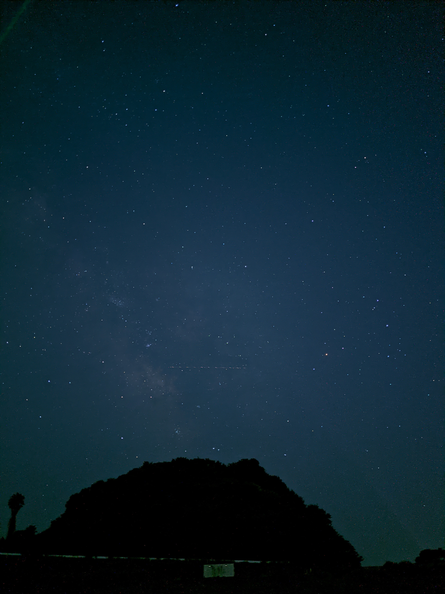

TJTC : 豊明ジュニア天文クラブ
愛知県豊明市の小中学生対象の文科系ジュニアクラブ(CJC)です。
毎月隔週土曜日に活動しています。
天体観測
望遠鏡を使った観測, 天体の撮影を紹介します。
プラネタリウムコンサート
豊明市立豊明中学校にあったプラネタリウム投影機を使って夜空の星たちを紹介します。
天文情報
コンピューターを正しく使って、星たちを知る方法を紹介します。
お問い合わせはこちらから
